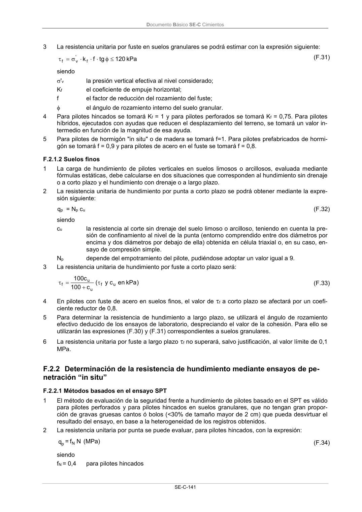

DB-SE-C · Fragmento de PDF p145 · versión 2019-12-20 · capa oficial
Formatos: JSON compacto · Markdown · PDF fuente
Ámbito del documento · texto del ámbito · documento y tablas
ID técnico a0256 · PDF pág. 145-146 · jerarquía no validada por persona · no es capítulo: sin_linea_de_encabezado · padre: raíz · literal original en el contenido: «ticas»
ticas 1 Cuando se utilizan métodos basados en la teoría de la plasticidad, y para la obtención aproximada de la resistencia unitaria por punta y por fuste, se tendrá en cuenta si se trata de suelos granulares o suelos finos. F.2.1.1 Suelos granulares 1 La resistencia unitaria de hundimiento por punta de pilotes en suelos granulares se podrá estimar con la expresión siguiente: qp = fp· ’vp ·Nq 20 MPa (F.30) siendo fp = 3 para pilotes hincados; fp = 2,5 para pilotes hormigonados in situ; 'vp la presión vertical efectiva al nivel de la punta antes de instalar el pilote; Nq el factor de capacidad de carga definido por la expresión e . sen - 1 sen + 1 tg , donde es el ángulo de rozamiento interno del suelo. 2 Dada la dificultad de obtener muestras inalteradas de suelos granulares, para hallar el valor de en laboratorio, se recomienda proceder a su determinación mediante correlaciones con ensayos”in si- tu” de penetración debidamente contrastadas (véase tablas 4.1 y 4.2, figuras D.1 y D.2). Documento Básico SE-C Cimientos SE-C-141 3 La resistencia unitaria por fuste en suelos granulares se podrá estimar con la expresión siguiente: kPa 120 tg f k f ' v f (F.31) siendo 'v la presión vertical efectiva al nivel considerado; Kf el coeficiente de empuje horizontal; f el factor de reducción del rozamiento del fuste; el ángulo de rozamiento interno del suelo granular. 4 Para pilotes hincados se tomará Kf = 1 y para pilotes perforados se tomará Kf = 0,75. Para pilotes híbridos, ejecutados con ayudas que reducen el desplazamiento del terreno, se tomará un valor in- termedio en función de la magnitud de esa ayuda. 5 Para pilotes de hormigón "in situ" o de madera se tomará f=1. Para pilotes prefabricados de hormi- gón se tomará f = 0,9 y para pilotes de acero en el fuste se tomará f = 0,8. F.2.1.2 Suelos finos 1 La carga de hundimiento de pilotes verticales en suelos limosos o arcillosos, evaluada mediante fórmulas estáticas, debe calcularse en dos situaciones que corresponden al hundimiento sin drenaje o a corto plazo y el hundimiento con drenaje o a largo plazo. 2 La resistencia unitaria de hundimiento por punta a corto plazo se podrá obtener mediante la expre- sión siguiente: qp = Np cu (F.32) siendo cu la resistencia al corte sin drenaje del suelo limoso o arcilloso, teniendo en cuenta la pre- sión de confinamiento al nivel de la punta (entorno comprendido entre dos diámetros por encima y dos diámetros por debajo de ella) obtenida en célula triaxial o, en su caso, en- sayo de compresión simple. Np depende del empotramiento del pilote, pudiéndose adoptar un valor igual a 9. 3 La resistencia unitaria de hundimiento por fuste a corto plazo será: ) kPa en c y ( c 100 c 100 u f u u f (F.33) 4 En pilotes con fuste de acero en suelos finos, el valor de f a corto plazo se afectará por un coefi- ciente reductor de 0,8. 5 Para determinar la resistencia de hundimiento a largo plazo, se utilizará el ángulo de rozamiento efectivo deducido de los ensayos de laboratorio, despreciando el valor de la cohesión. Para ello se utilizarán las expresiones (F.30) y (F.31) correspondientes a suelos granulares. 6 La resistencia unitaria por fuste a largo plazo f no superará, salvo justificación, al valor límite de 0,1 MPa.

PDF fuente redistribuible: copia fiel enlazada en esta página (SHA256 verificado).